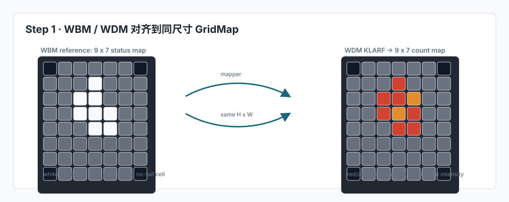
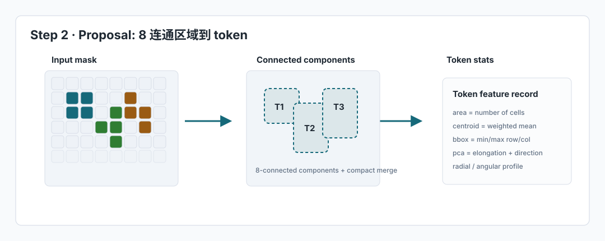
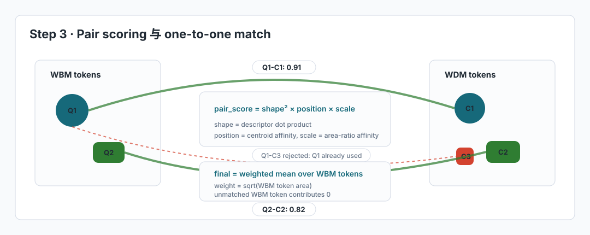

WBM-WDM Matching
Proposal 到 Match 的局部形态匹配方案
本页面解释当前 count-partial / binary partial 的完整设计：
将 WBM 与映射后的 WDM 转成同尺寸 GridMap，提取局部 token，用连续形状 descriptor、位置和尺度生成 token-level 匹配证据，并用每个 WBM token 的最佳匹配计算摘要分数。
总览
图片案例
下面三张图对应当前算法的主要阶段：GridMap 对齐、proposal token 提取、pair scoring 与 token-level evidence。



输入和语义
WBM 是参考目标，PNG 被读成 GridMaps。白色表示 fail die，
灰色表示 wafer 内无 fail die，黑色表示背景。局部匹配只在 WBM 的有效区域内计算。
WDM 是候选 KLARF 缺陷点。它先通过 mapper 聚合到目标 WBM 的同尺寸网格，
得到 count_map 和 binary_map。
WBM MxN 示例
WDM 映射后
两种局部匹配入口
| 入口 | WBM token | WDM token | 权重 |
|---|---|---|---|
count-partial |
status_map == VALID_HAS_DEFECT |
candidate.count_map > 0 |
WDM 使用 cell 内 defect count |
binary partial |
status_map == VALID_HAS_DEFECT |
candidate.binary_map > 0 |
WDM 每个 active cell 权重为 1 |
基础 8 个全图 similarity 是像素级指标；本页解释的是局部 token matching。 它更适合描述“候选 WDM 是否能解释 WBM 的局部失效区域形态”。
Proposal：从 map 到局部 token
有效区域裁剪
只保留 WBM 有意义区域：VALID_NO_DEFECT 与 VALID_HAS_DEFECT。
背景和未检测区域不参与 token 提取。
8 连通组件
所有 mode 统一使用 connectivity=8。对 MxN 小图，斜向相邻 cell
更可能属于同一个真实区域，8 连通能减少碎片化。
区域过滤和排序
小于 min_area 的区域被过滤。token 之后按 mass、area 和解释标签优先级排序，
保留 top-k 个候选区域。
cc 模式
cc 是最直接的 proposal：对输入 mask 做 8 连通聚类，每个连通区域就是一个 token。
它适合作为简单、稳定、可复现实验基线。
mask -> connected_components(connectivity=8)
-> filter by min_area
-> token_stats
-> sort by importance
-> top_kcompact 模式
compact 在 8 连通组件基础上加入更强的区域整理逻辑，用于处理断裂、
环边缘和碎片化 pattern。
gap grouping：对小间隙区域做保守闭运算聚合。ring aware：识别边缘环状分布，单独形成 ring token。geometry merge：合并相近且形态兼容的碎片。diverse topK：按解释标签保留更多不同形态的 token。
Token 示例
每个颜色块代表一个 proposal token。token 不只是像素集合，还带有一组统计特征。
Token Stats
| 字段 | 含义 | 计算方法 | 用途 |
|---|---|---|---|
area / mass |
区域 cell 数量 / count 权重总和 | area = len(pixels)mass = sum(weight_map[pixels]) |
排序、尺度相似度、WBM token 加权 |
centroid |
加权质心位置 | sum(row * weight) / masssum(col * weight) / mass |
位置相似度 |
bbox |
最小外接矩形 | min/max(rows) 与 min/max(cols) |
宽高比、fill ratio、fragment merge |
PCA |
主方向和主轴方差 | 对质心归一后的坐标计算加权协方差，再做 eigh |
elongation、orientation |
radial / angular |
相对 wafer 中心的半径、角覆盖和径向离散程度 | 以 wafer 中心为原点计算 radius、atan2 和角度 bin 覆盖率 |
边缘环、中心型、形状 profile |
geometry_type |
人工解释标签：blob、line、edge_ring、central、irregular | 由 radial_distance、angular_coverage、fill_ratio、elongation 等阈值规则得到 |
仅用于解释和 diverse topK，不参与最终 score |
Descriptor：连续形状向量
当前最终打分不再使用离散 geometry_type 惩罚。形状相似性只由 descriptor 的连续特征决定，
这样可以避免硬阈值分类造成分数突变。对于当前 MxN map，实际使用的是
coarse descriptor。
coarse descriptor
用于 short_side <= 12 的小尺寸 map，例如 MxN。它不使用方向，
并采用 4-bin profile，减少低分辨率下的抖动。最终 descriptor 会做 L2 归一化，
pair scoring 中的 shape_sim 由两个 descriptor 的点积得到。
| 组成部分 | 计算方法 | 作用 |
|---|---|---|
fill_ratio |
area / (bbox_height * bbox_width) |
描述区域是否饱满；可区分实心块状区域和稀疏断裂区域。 |
log_aspect |
log1p(max(h/w, w/h)) / log(16) |
描述外接框长宽比例；用于识别横向或纵向拉长的 pattern。 |
log_elongation |
log1p(pca_lambda1 / pca_lambda2) / log(64) |
描述主轴拉伸程度；比 bbox aspect 更关注像素实际分布。 |
compactness |
min((perimeter / area) / 4, 1) |
描述边界复杂度；紧致区域和破碎/细长区域会得到不同响应。 |
radial_distance_norm |
distance(centroid, wafer_center) / wafer_radius |
描述 token 位于中心还是边缘；补足原先 central / edge_ring 标签中的位置信息。 |
angular_coverage |
统计 token pixels 覆盖的角度 bin 数量，占全部角度 bin 的比例 | 描述区域沿圆周展开的范围；边缘弧状或环状 pattern 通常更高。 |
radial_std |
计算 token pixels 到 wafer 中心归一化半径的标准差 | 描述区域是否集中在同一半径带；环边缘 pattern 通常更低。 |
radial_profile_4_bins |
以 token 质心为原点，统计像素半径分布的 4-bin 直方图 | 描述 token 内部从中心到边界的填充分布。 |
angular_profile_4_bins |
以 token 质心为原点，统计像素角度分布的 4-bin 直方图 | 描述 token 内部朝向分布；小图下使用低 bins 降低抖动。 |
总维度：7 个标量特征 + 4-bin radial profile + 4-bin angular profile = 15。
Pair Scoring
shape_sim = max(dot(desc_wbm, desc_wdm), 0)
descriptor 已归一化，点积等价于 cosine-like shape similarity。
exp(-||pos_wbm - pos_wdm||^2 / sigma_pos^2)
区域质心越接近，得分越高。
exp(-abs(log(area_ratio_wbm / area_ratio_wdm)) / sigma_scale)
区域相对面积越接近，得分越高。
score = shape_sim^2 * position_affinity * scale_affinity
若 shape_sim < 0.45，pair score 直接置 0。geometry_type 不再参与乘法打分。
Token Evidence 与 Summary Score
系统先枚举所有 WBM token 与 WDM token 的 pair score。每个 WBM token 会保留 Top-K 个 WDM token 候选作为局部证据；整张 WDM map 也会保留全局最高分的 Top-K 个 token pair，便于查看最强局部匹配。
pairs = all positive token-pair scores
sort pairs by score desc
token_topk_matches =
for each wbm_token:
take top_k WDM candidates by pair score
map_topk_matches =
take top_k token pairs over the whole WDM map
accepted =
greedy_one_to_one(pairs sorted by score desc)
final = weighted_mean(
greedy_accepted_score_for_each_wbm_token,
weight = sqrt(wbm_token.area)
)明细表中同一个 WBM token 可以出现多个 WDM 候选，但计算该 WDM map 的总分时， 会按 pair score 从高到低做一对一贪心匹配；每个 WBM token 和每个 WDM token 都最多使用一次。 没有被接受匹配的 WBM token 贡献 0 分。
改进方向汇总
| 模块 | 当前问题 | 改进方向 |
|---|---|---|
| Proposal | 过度依赖连通性，难以表达断裂、稀疏或人工关注的区域。 | 支持非连通 token、手动区域 proposal，以及面向 pattern 语义的区域生成。 |
| Shape Descriptor | 统计特征可解释但表达力有限，对旋转、稀疏点集和多片段关系不够稳定。 | 引入点集分布、组件关系、多尺度形状描述，增强对非连通 pattern 的表达。 |
| Similarity | 固定组合方式不能适配所有产品、分辨率和 pattern 类型。 | 让各分量影响可调整，并保留清晰的分项解释，便于分析排序变化。 |
| Review | 只看总分难以判断错误来自 proposal、descriptor 还是 similarity。 | 在可视化和日志中呈现 token 来源、形状描述、分项相似度和失败原因。 |
Proposal 应尽量生成语义完整的 token；descriptor 负责描述 token 内部和片段间结构； similarity 负责比较 token，而不是补救 proposal 阶段没有表达出来的模式。
MxN 小图策略
| 配置项 | MxN 实际值 | 原因 |
|---|---|---|
short_side |
7 |
触发小尺寸分支。 |
min_area |
min(user_min_area, 2) |
小图中真实区域可能只有少量 cell，不能沿用大图面积阈值。 |
top_k |
min(user_top_k, 4) |
避免低分辨率图产生过多碎片 token。 |
connectivity |
8 |
斜向相邻在小图中通常应视为同一区域。 |
descriptor_mode |
coarse |
去掉不稳定方向项，使用更粗 profile。 |
端到端伪代码
# 1. 逐个处理候选 WDM KLARF 文件
for each KLARF candidate:
# 2. 文件级过滤：缺陷总数太少时不做后续匹配
if defect_count < defect_threshold:
skip candidate
# 3. 坐标映射：把 KLARF 缺陷点聚合到目标 WBM 的 MxN grid
wdm_grid = map_klarf_to_grid(
shape = wbm.shape,
mapper = args.mapper,
representation = args.representation
)
# 4. 构造参与 proposal 的 mask
# valid_mask: 只保留 WBM 晶圆内有效区域
# wbm_mask: 目标失效区域
# wdm_mask: 候选 WDM 映射后的有缺陷 cell
valid_mask = wbm.status in {VALID_NO_DEFECT, VALID_HAS_DEFECT}
wbm_mask = wbm.status == VALID_HAS_DEFECT
wdm_mask = wdm_grid.count_map > 0 # count-partial
# 5. proposal 配置：MxN 会使用 coarse descriptor、top_k=4、min_area=2、connectivity=8
config = proposal_config(
shape = wbm.shape,
connectivity = 8,
mode = cc or compact
)
# 6. 提取 WBM / WDM token
# cc: 8 连通组件直接作为 token
# compact: 在 8 连通组件上做 gap grouping、ring-aware、fragment merge
wbm_tokens = propose_tokens(wbm_mask, valid_mask, config)
wdm_tokens = propose_tokens(wdm_mask, valid_mask, config)
# 7. 为每个 token 计算统计特征，并生成 coarse descriptor
for each token:
stats = area + centroid + bbox + pca + radial/angular features
descriptor = normalize(continuous_shape_features)
# 8. 枚举 WBM token 与 WDM token 的 pair score
# shape: descriptor 点积
# position: token 质心接近程度
# scale: token 相对面积接近程度
pairs = []
for q in wbm_tokens:
for c in wdm_tokens:
shape = dot(q.descriptor, c.descriptor)
position = exp(-distance(q.pos, c.pos)^2 / sigma_pos^2)
scale = exp(-abs(log(q.area_ratio / c.area_ratio)) / sigma_scale)
pair_score = shape^2 * position * scale
pairs.append(pair_score)
# 9. 保存 token-level evidence
# token_match_topk.tsv: 每个 WBM token 的 Top-K WDM 候选
token_topk_matches = {}
for q in wbm_tokens:
token_topk_matches[q] = top_k(pairs where pair.wbm_token == q)
# map_match_topk.tsv: 单张 WDM map 内最高分的 Top-K token pair
map_topk_matches = top_k(pairs)
# 10. 聚合总分：按 score 降序做一对一贪心，未匹配 WBM token 计 0 分
accepted = []
used_wbm = set()
used_wdm = set()
for pair in sort_desc(pairs):
if pair.wbm_token not in used_wbm and pair.wdm_token not in used_wdm:
accepted.append(pair)
used_wbm.add(pair.wbm_token)
used_wdm.add(pair.wdm_token)
final_score = weighted_mean(accepted, weight=sqrt(wbm_token.area))